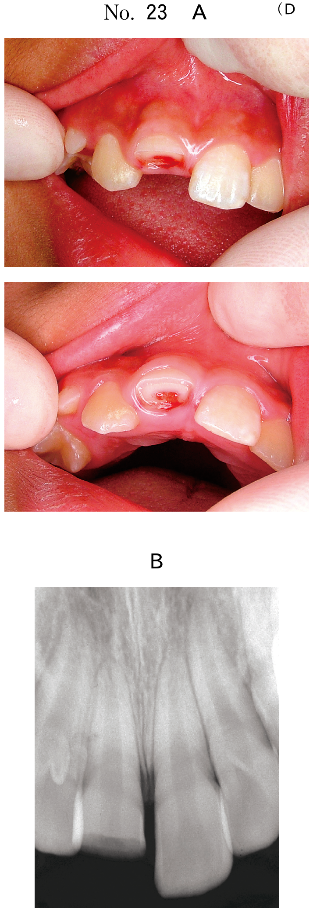
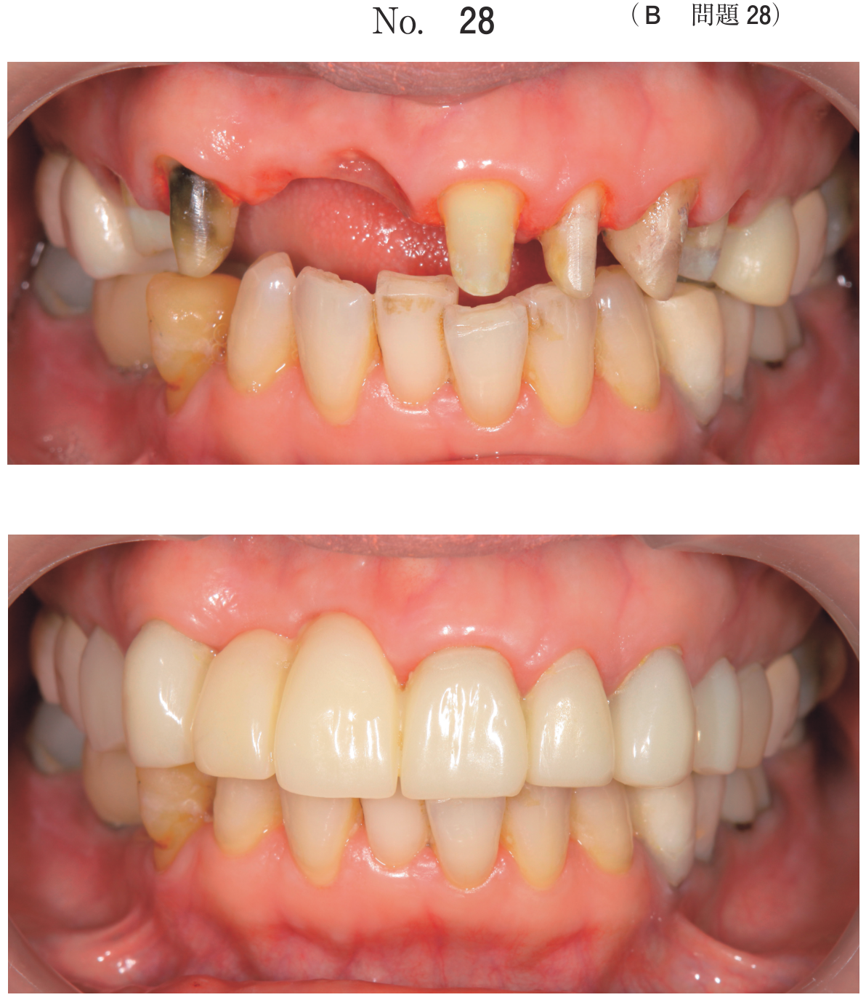
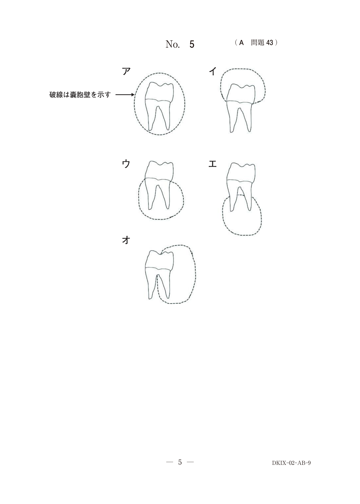
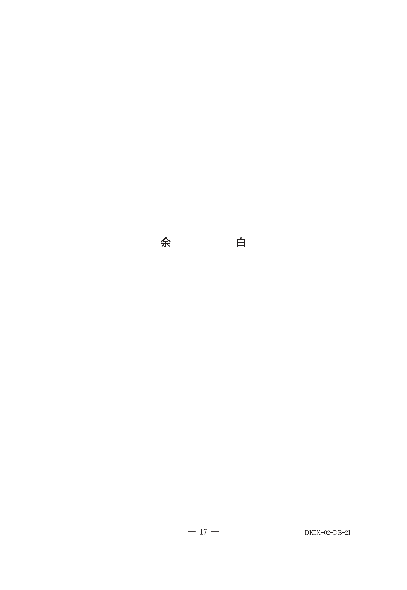

抜歯・切開排膿
乳歯の抜歯適応（頻出）
- 歯槽骨の吸収範囲が広い（最重要）
- 歯根吸収が1/3以上
- 後継永久歯歯胚への影響が大きい
- 感染根管治療が困難または無効
乳歯の抜歯基準
| 歯根吸収 | 歯槽骨吸収 | 対応 |
|---|---|---|
| 1/3未満 | なし〜軽度 | 感染根管治療 |
| 1/3以上 | − | 抜歯 |
| − | 広範囲 | 抜歯 |
後継永久歯歯胚に近接した病変は抜歯の適応となる
切開排膿の適応
- 歯肉膿瘍・歯槽膿瘍で波動を触れる場合
- 急性症状（腫脹・疼痛）が強い場合
- 排膿により消炎を図る
切開排膿と抜歯の選択
| 状況 | 対応 |
|---|---|
| 膿瘍形成（波動あり）+ 保存可能 | 切開排膿 → 消炎後に根管治療 |
| 膿瘍形成 + 保存不可能 | 切開排膿 → 消炎後に抜歯 |
| 歯槽骨吸収が広範囲 | 抜歯 |
過去問
3歳の女児。下顎右側乳臼歯部の歯肉腫脹を主訴として来院した。3か月前からD┐の齲蝕に気付いていたが放置していたという。咬合痛がある。D┐を抜歯することとした。初診時の口腔内写真（別冊No.31A）とエックス線写真（別冊No.31B）とを別に示す。治療方針の根拠はどれか。1つ選べ。


b 歯冠の崩壊度
c 歯根吸収の程度
d 歯肉膿瘍の大きさ
e 歯槽骨の吸収範囲
【解説】乳歯の抜歯判断で最も重要なのは歯槽骨の吸収範囲。X線で広範囲の歯槽骨吸収が認められる場合、感染根管治療では対応できず抜歯適応となる。
5歳の男児。上顎右側乳中切歯の歯肉腫脹を主訴として来院した。3日前から腫脹し咬合時に痛みがあるという。初診時の口腔内写真（別冊No.42A）とエックス線写真（別冊No.42B）を別に示す。適切な対応はどれか。1つ選べ。


b 切 開
c 麻酔抜髄
d 直接覆髄
e 副腎皮質ステロイド軟膏塗布
【解説】歯肉の腫脹（膿瘍形成）がある場合はまず切開排膿により消炎を図る。急性症状が治まってから根管治療または抜歯を検討する。
8歳の女児。下顎左側乳臼歯部歯肉の腫脹を主訴として来院した。「Eは1年前に治療を受けたという。軽度の動揺があるが、自発痛と打診痛はない。初診時の口腔内写真（別冊No.9A）とエックス線画像（別冊No.9B）を別に示す。「Eに対する適切な対応はどれか。1つ選べ。


b 生活歯髄切断
c 抜 髄
d 感染根管治療
e 抜 歯
【解説】X線で歯槽骨吸収が認められ、後継永久歯（第二小臼歯）への影響が懸念される。歯根治療歴があり再発しているため抜歯が適切。
9歳の男児。下顎右側臼歯部歯肉の腫脹を主訴として来院した。1年前に他院で治療を受け、その後問題はなかったが、3日前に気付いたという。ED┐の動揺度は0度で、自発痛はないが軽度の打診痛がある。D┐は歯髄電気診で生活反応を示さなかった。初診時の口腔内写真（別冊No.21A）とエックス線画像（別冊No.21B）を別に示す。E┐とD┐への対応の組合せで正しいのはどれか。1つ選べ。


b 感染根管治療 −−−− 感染根管治療
c 感染根管治療 −−−− 抜 歯
d 抜 歯 −−−−−−− 感染根管治療
e 抜 歯 −−−−−−− 抜 歯
【解説】X線でE┐・D┐ともに広範囲の歯槽骨吸収が認められ、後継永久歯への影響が大きい。両歯とも抜歯が適切。感染根管治療では対応できない状態。